-
Quick Quote Process
12:35:04 PM / 00:01:13:623 Fail
Quick Quote Process
10.24.2024 12:35:04 PM 10.24.2024 12:36:17 PM 00:01:13:623 · #test-id=1As a user, I want to get a quick health insurance quotePassUser verifies Starter Extras EligibilityGiven I am on the quote pageStepDefinitions.Hooks.addScreenshot(io.cucumber.java.Scenario)Screenshot for passed step: User verifies Starter Extras EligibilityWhen I click the "Get Quote" buttonStepDefinitions.Hooks.addScreenshot(io.cucumber.java.Scenario)Screenshot for passed step: User verifies Starter Extras EligibilityAnd I select cover for a single personStepDefinitions.Hooks.addScreenshot(io.cucumber.java.Scenario)Screenshot for passed step: User verifies Starter Extras Eligibility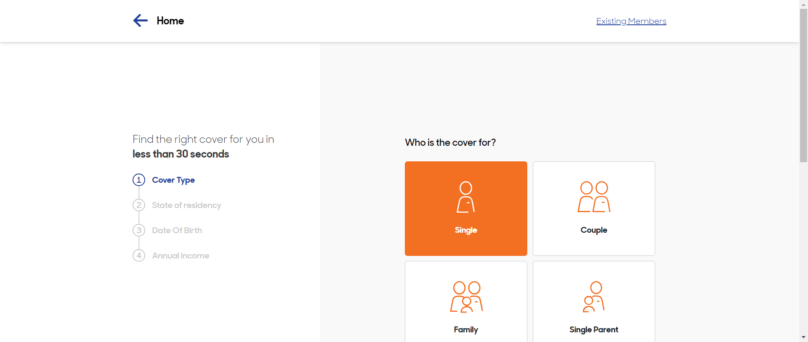And I click the "Next" buttonStepDefinitions.Hooks.addScreenshot(io.cucumber.java.Scenario)Screenshot for passed step: User verifies Starter Extras Eligibility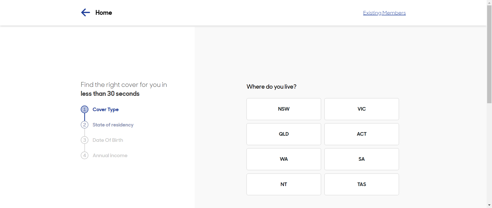And I select the residence as "NSW"StepDefinitions.Hooks.addScreenshot(io.cucumber.java.Scenario)Screenshot for passed step: User verifies Starter Extras Eligibility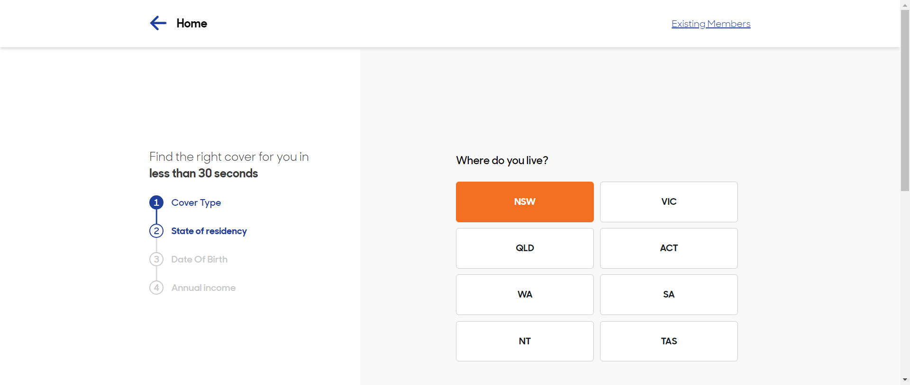And I click the "Next" buttonStepDefinitions.Hooks.addScreenshot(io.cucumber.java.Scenario)Screenshot for passed step: User verifies Starter Extras Eligibility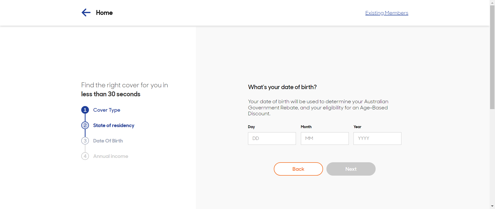And I enter my date of birth as "01/01/1990"StepDefinitions.Hooks.addScreenshot(io.cucumber.java.Scenario)Screenshot for passed step: User verifies Starter Extras Eligibility And I click the "Next" buttonStepDefinitions.Hooks.addScreenshot(io.cucumber.java.Scenario)Screenshot for passed step: User verifies Starter Extras Eligibility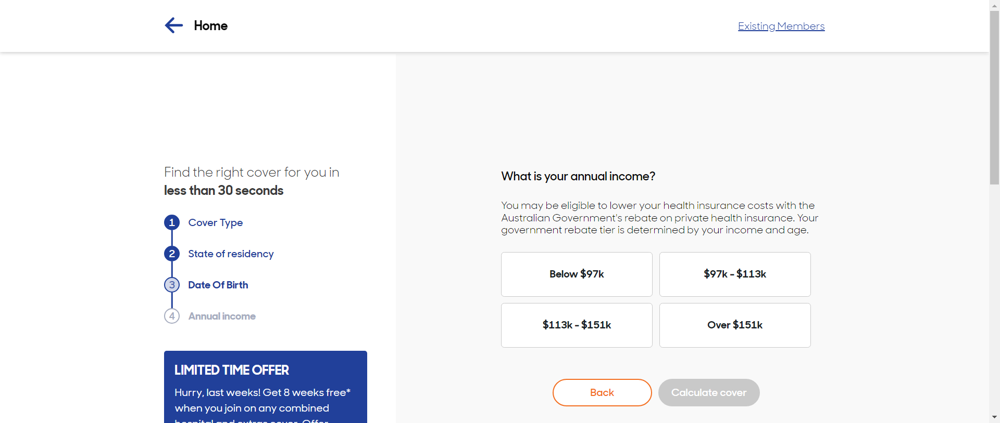And I select my annual incomeStepDefinitions.Hooks.addScreenshot(io.cucumber.java.Scenario)Screenshot for passed step: User verifies Starter Extras Eligibility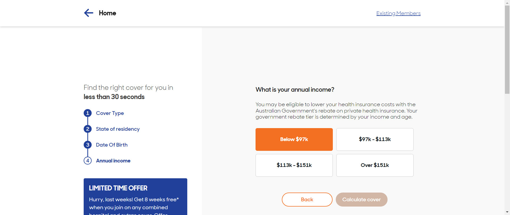And I click the "Calculate Cover" buttonStepDefinitions.Hooks.addScreenshot(io.cucumber.java.Scenario)Screenshot for passed step: User verifies Starter Extras Eligibility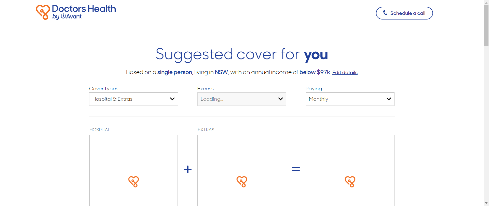Given the_user_selects_plan "Smart Starter Bronze Plus"StepDefinitions.Hooks.addScreenshot(io.cucumber.java.Scenario)Screenshot for passed step: User verifies Starter Extras Eligibility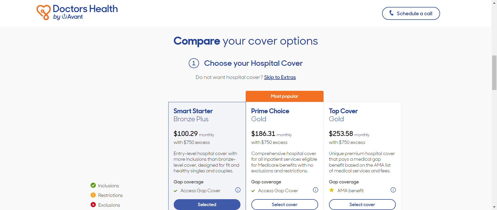When the user selects "Starter Extras"StepDefinitions.Hooks.addScreenshot(io.cucumber.java.Scenario)Screenshot for passed step: User verifies Starter Extras Eligibility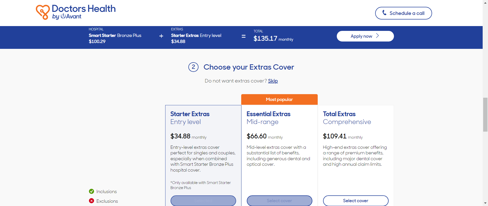Then "Starter Extras" should be enabledStepDefinitions.Hooks.addScreenshot(io.cucumber.java.Scenario)Screenshot for passed step: User verifies Starter Extras Eligibility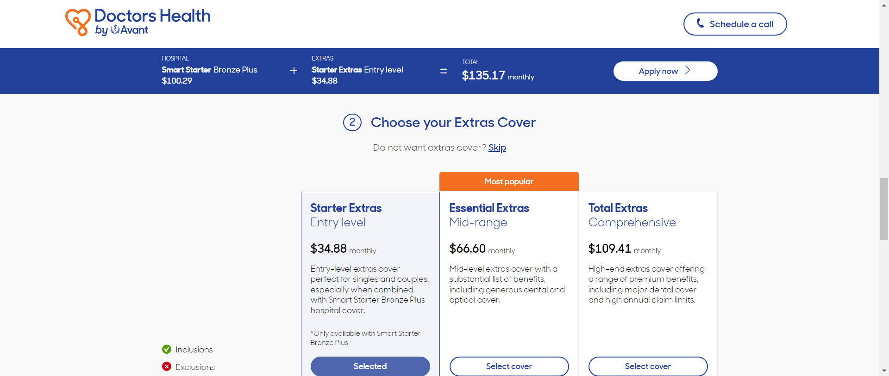Given the_user_selects_plan "Prime Choice"StepDefinitions.Hooks.addScreenshot(io.cucumber.java.Scenario)Screenshot for passed step: User verifies Starter Extras Eligibility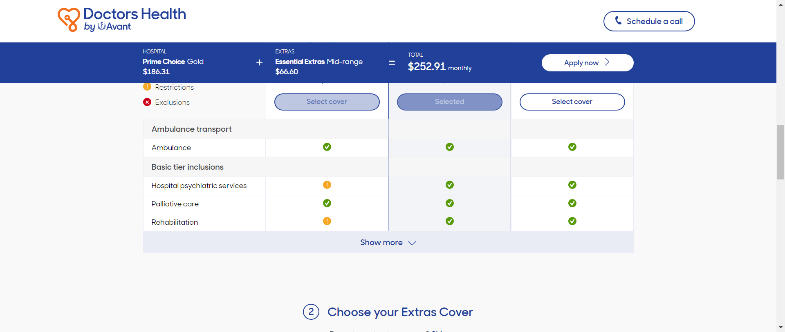When the user attempts to select "Starter Extras"StepDefinitions.Hooks.addScreenshot(io.cucumber.java.Scenario)Screenshot for passed step: User verifies Starter Extras Eligibility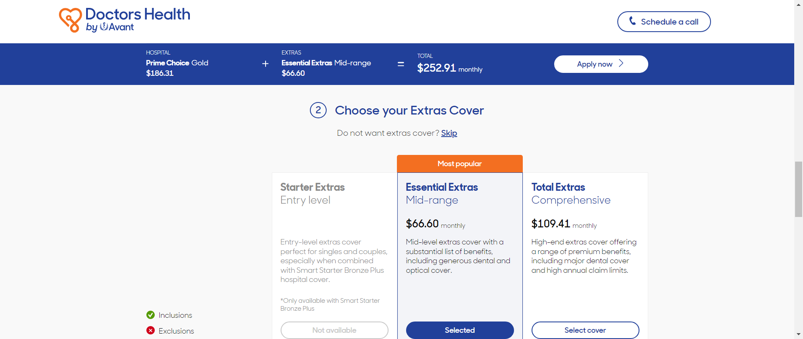Then "Starter Extras" should be disabledStepDefinitions.Hooks.addScreenshot(io.cucumber.java.Scenario)Screenshot for passed step: User verifies Starter Extras EligibilityGiven the_user_selects_plan "Top Cover"StepDefinitions.Hooks.addScreenshot(io.cucumber.java.Scenario)Screenshot for passed step: User verifies Starter Extras Eligibility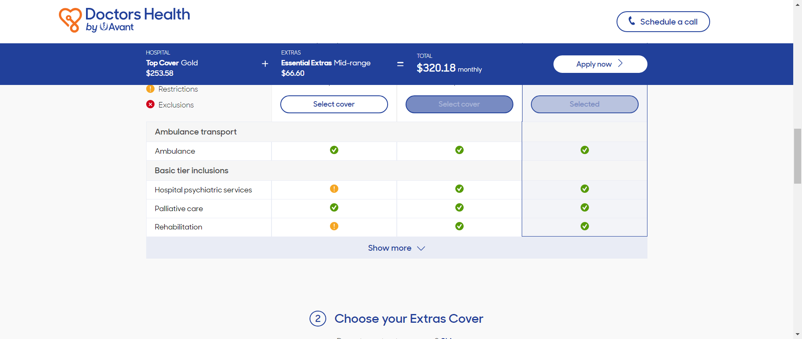When the user attempts to select "Starter Extras"StepDefinitions.Hooks.addScreenshot(io.cucumber.java.Scenario)Screenshot for passed step: User verifies Starter Extras Eligibility
And I click the "Next" buttonStepDefinitions.Hooks.addScreenshot(io.cucumber.java.Scenario)Screenshot for passed step: User verifies Starter Extras Eligibility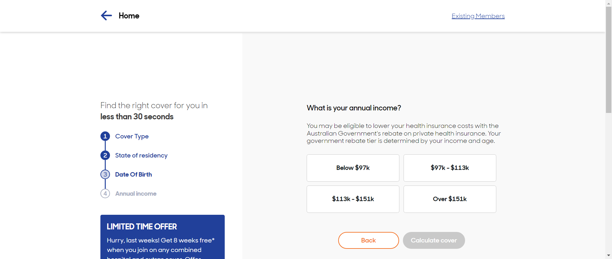And I select my annual incomeStepDefinitions.Hooks.addScreenshot(io.cucumber.java.Scenario)Screenshot for passed step: User verifies Starter Extras Eligibility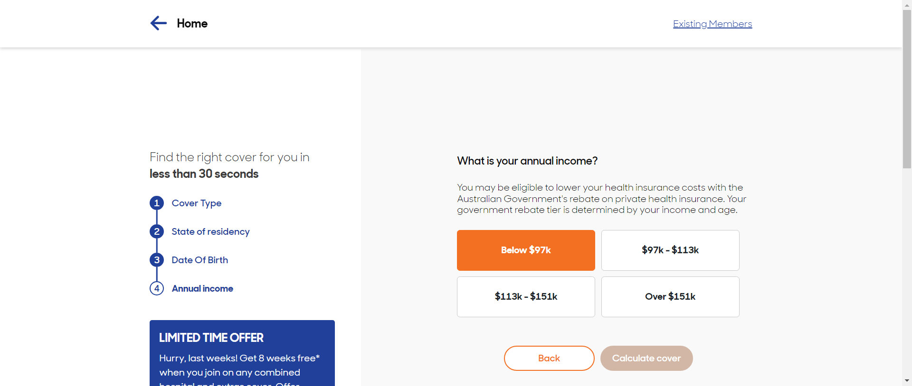And I click the "Calculate Cover" buttonStepDefinitions.Hooks.addScreenshot(io.cucumber.java.Scenario)Screenshot for passed step: User verifies Starter Extras Eligibility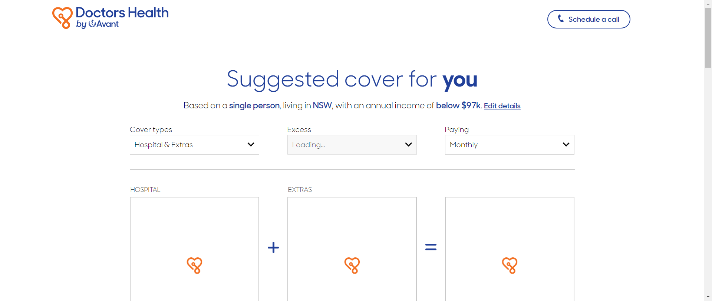Given the_user_selects_plan "Smart Starter Bronze Plus"StepDefinitions.Hooks.addScreenshot(io.cucumber.java.Scenario)Screenshot for passed step: User verifies Starter Extras Eligibility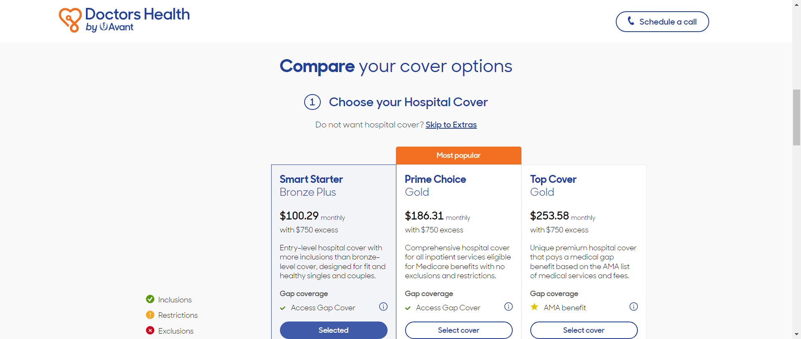When the user selects "Starter Extras"StepDefinitions.Hooks.addScreenshot(io.cucumber.java.Scenario)Screenshot for passed step: User verifies Starter Extras Eligibility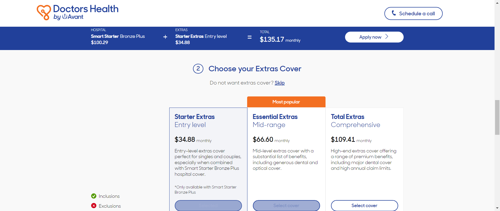Then "Starter Extras" should be enabledStepDefinitions.Hooks.addScreenshot(io.cucumber.java.Scenario)Screenshot for passed step: User verifies Starter Extras Eligibility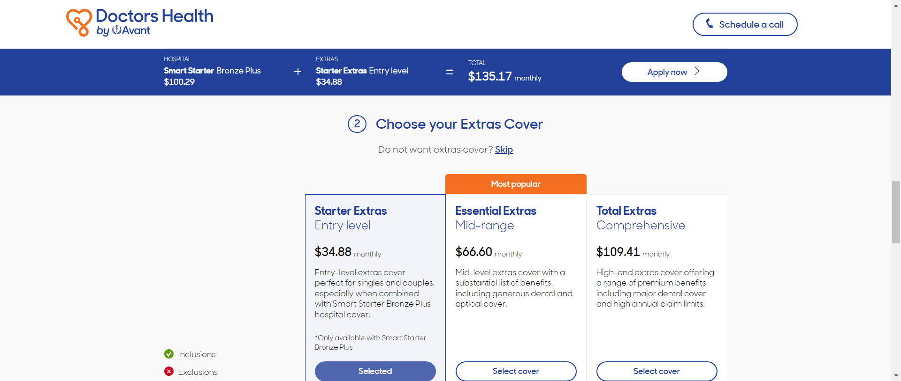Given the_user_selects_plan "Prime Choice"StepDefinitions.Hooks.addScreenshot(io.cucumber.java.Scenario)Screenshot for passed step: User verifies Starter Extras Eligibility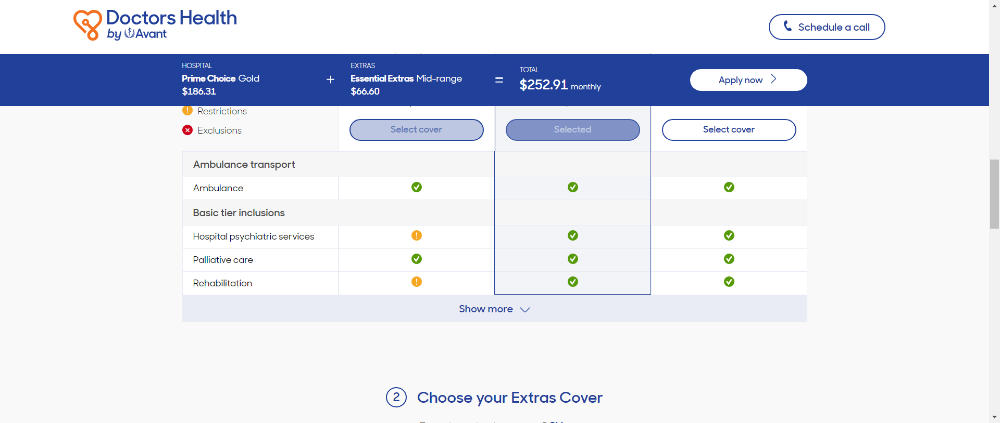When the user attempts to select "Starter Extras"StepDefinitions.Hooks.addScreenshot(io.cucumber.java.Scenario)Screenshot for passed step: User verifies Starter Extras Eligibility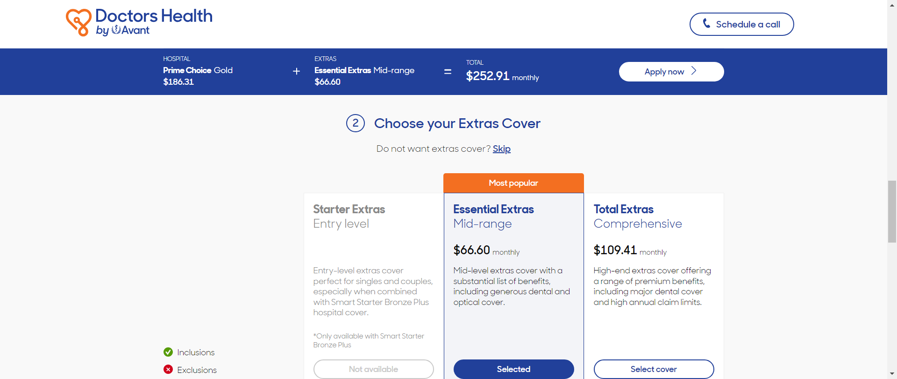Then "Starter Extras" should be disabledStepDefinitions.Hooks.addScreenshot(io.cucumber.java.Scenario)Screenshot for passed step: User verifies Starter Extras EligibilityGiven the_user_selects_plan "Top Cover"StepDefinitions.Hooks.addScreenshot(io.cucumber.java.Scenario)Screenshot for passed step: User verifies Starter Extras Eligibility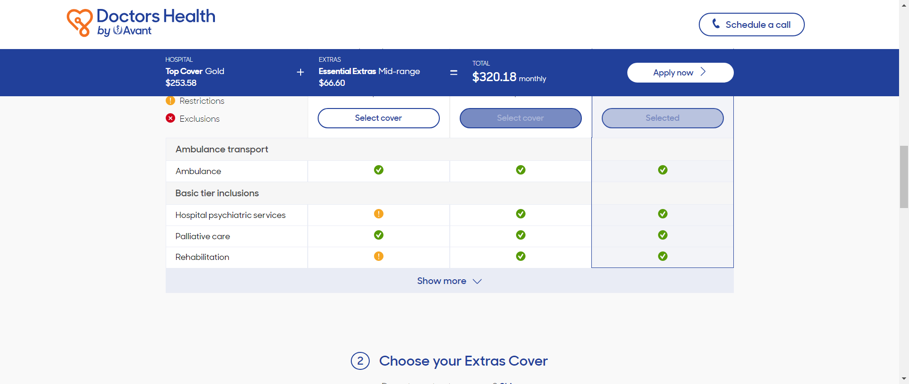When the user attempts to select "Starter Extras"StepDefinitions.Hooks.addScreenshot(io.cucumber.java.Scenario)Screenshot for passed step: User verifies Starter Extras Eligibility Then "Starter Extras" should be disabledStepDefinitions.Hooks.addScreenshot(io.cucumber.java.Scenario)Screenshot for passed step: User verifies Starter Extras Eligibility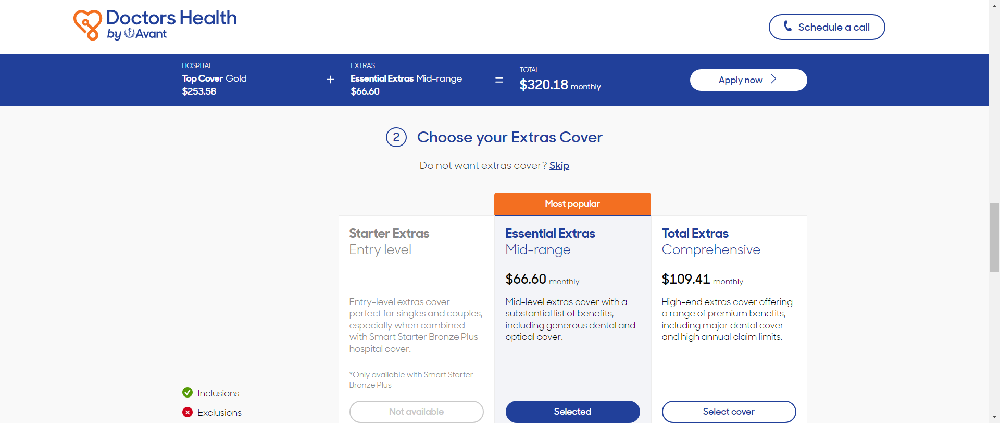FailUser verifies Starter Extras EligibilityGiven I am on the quote pageStepDefinitions.Hooks.addScreenshot(io.cucumber.java.Scenario)Screenshot for passed step: User verifies Starter Extras Eligibility
Then "Starter Extras" should be disabledStepDefinitions.Hooks.addScreenshot(io.cucumber.java.Scenario)Screenshot for passed step: User verifies Starter Extras Eligibility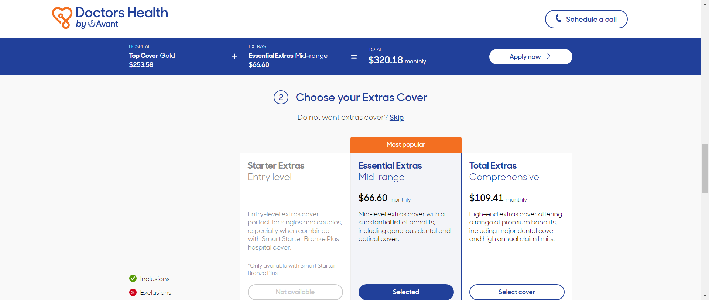FailUser verifies Starter Extras EligibilityGiven I am on the quote pageStepDefinitions.Hooks.addScreenshot(io.cucumber.java.Scenario)Screenshot for passed step: User verifies Starter Extras Eligibility When I click the "Get Quote" buttonStepDefinitions.Hooks.addScreenshot(io.cucumber.java.Scenario)And I select cover for a single personStep skippedAnd I click the "Next" buttonStep skippedAnd I select the residence as "NSW"Step skippedAnd I click the "Next" buttonStep skippedAnd I enter my date of birth as "01/01/1990"Step skippedAnd I click the "Next" buttonStep skippedAnd I select my annual incomeStep skippedAnd I click the "Calculate Cover" buttonStep skippedAnd I clicked on the cover type dropdown and selected Extras only.Step skippedWhen the user attempts to select "Starter Extras"Step skippedThen "Starter Extras" should be disabledStep skipped
When I click the "Get Quote" buttonStepDefinitions.Hooks.addScreenshot(io.cucumber.java.Scenario)And I select cover for a single personStep skippedAnd I click the "Next" buttonStep skippedAnd I select the residence as "NSW"Step skippedAnd I click the "Next" buttonStep skippedAnd I enter my date of birth as "01/01/1990"Step skippedAnd I click the "Next" buttonStep skippedAnd I select my annual incomeStep skippedAnd I click the "Calculate Cover" buttonStep skippedAnd I clicked on the cover type dropdown and selected Extras only.Step skippedWhen the user attempts to select "Starter Extras"Step skippedThen "Starter Extras" should be disabledStep skipped
-
java.lang.AssertionError
1 tests
java.lang.AssertionError
1 failedStatus Timestamp TestName Fail 12:35:19 PM When I click the "Get Quote" button Quick Quote Process.User verifies Starter Extras Eligibility.When I click the "Get Quote" button -
org.openqa.selenium.NoSuchWindowException
1 tests
org.openqa.selenium.NoSuchWindowException
1 failedStatus Timestamp TestName Fail 12:36:17 PM StepDefinitions.Hooks.addScreenshot(io.cucumber.java.Scenario) Quick Quote Process.User verifies Starter Extras Eligibility.StepDefinitions.Hooks.addScreenshot(io.cucumber.java.Scenario)
-
@starterExtras
2 tests
@starterExtras
1 passed 1 failedStatus Timestamp TestName Pass 12:35:04 PM User verifies Starter Extras Eligibility Quick Quote Process.User verifies Starter Extras EligibilityFail 12:35:19 PM User verifies Starter Extras Eligibility Quick Quote Process.User verifies Starter Extras Eligibility
Started
Oct 24, 2024 12:35:03 PM
Ended
Oct 24, 2024 12:36:17 PM
Features Passed
0
Features Failed
1
Features
Scenarios
Steps
Timeline
Tags
| Name | Passed | Failed | Skipped | Others | Passed % |
|---|---|---|---|---|---|
| @starterExtras | 1 | 1 | 0 | 0 | 50% |